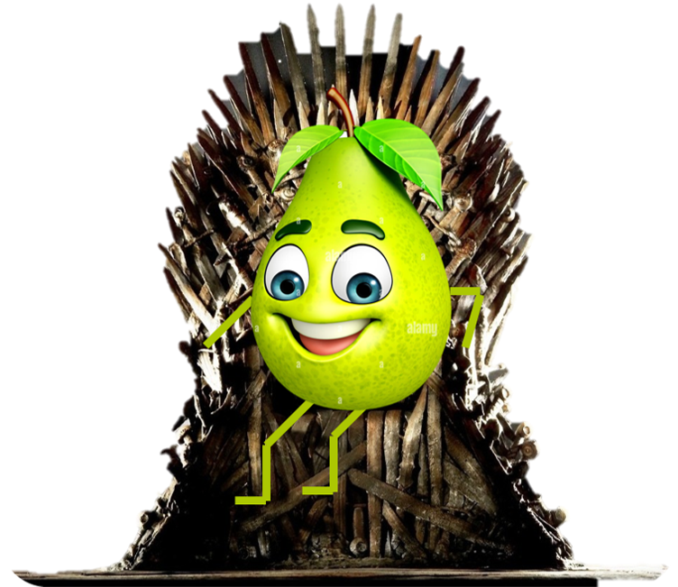
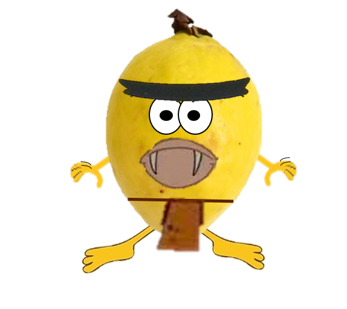
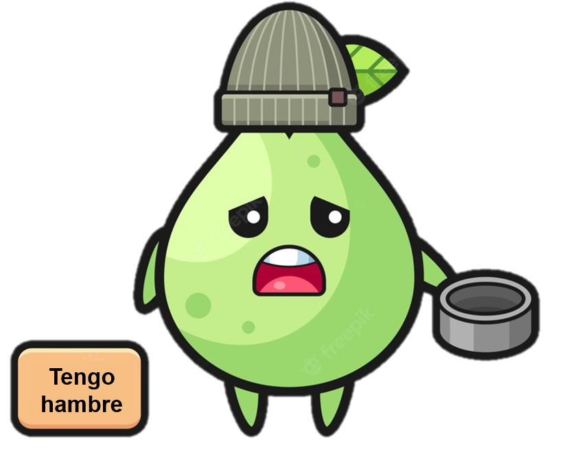

 Los pueblos reducidos al poderío Guavo debían entregar a las autoridades del imperio pesados tributos en especie. Los tributos se fijaban de acuerdo a los recursos disponibles en cada región; por ejemplo, los Peroz de Peranía aportaban con lanzas, escudos de plumas y caracoles marinos y los Jamaiquino con productos agrícolas como maíz, porotos y ají.
Las cargas tributarias impuestas por la Triple Alianza, le valieron a los Guavos el odio generalizado de los pueblos sometidos del Valle de la regió. Para la administración del vasto imperio, los Guavos implementaron un rígido sistema basado en el poder personal de la nobleza. A la cabeza de la estructura de mando estaba el soberano o huey Guatoani (gran orador y jefe de los hombres) con amplios poderes militares, civiles y religiosos. El huey Guatoani presidía el consejo supremo o Glatoacán, donde participaban los jefes o Guatoani de las ciudades más importantes, las máximas autoridades militares y delegados de algunos guavillis.
El consejo tomaba las decisiones políticas, militares y administrativas y designaba al nuevo huey Guatoani cuando se producía la muerte del soberano. En el territorio que se encontraba bajo jurisdicción Guavina, especialmente en los focos rebeldes, había gobernadores militares apoyados por pequeñas guarniciones que mantenían el orden y aseguraban la recaudación de los tributos.
 La expansión del imperio Guavino afectó en gran medida a la organización social. Mientras la nobleza, formada por los Guatoani de las principales ciudades, los guerreros y sacerdotes, fue acumulando cada vez más tierras y riquezas, la gente común o guahualtin siguió desempeñándose fundamentalmente como mano de obra en la agricultura y la artesanía y debía pagar tributos al imperio. Dentro de la clase dirigente comenzaron a jugar un papel muy importante los Guecuhtli o señores, quienes gozaban de un gran prestigio logrado a raíz de acciones sobresalientes. Estos ejercieron funciones militares, judiciales y administrativas y recibían tierras y servidores como recompensa. Debían estar siempre disponibles para cuando el soberano los necesitara.
Los denominados Guacehualtin conformaban a la mayor parte del pueblo Guavo. Aparte de los labradores, encontramos en este grupo a artesanos y servidores públicos. Si bien los Guacehualtin tenían la posibilidad de mejorar su situación social, destacándose en la guerra o el comercio, la movilidad dentro del imperio fue muy reducida.
 La unidad social básica en el mundo Guavino era el guavillis, conformado por familias de Guacehualtin que tenían antepasados comunes y compartían un territorio subdividido en parcelas comunales. Al frente de cada calpuguavilli estaba el calpullec, electo de por vida por los habitantes y en conformidad con el soberano Guavo. Su principal tarea era el registro de todas las tierras de la comunidad y el control de las labores de cultivo.
Por último, en la sociedad Guava existían los Guavacotli, quienes eran personas que por haber contraído deudas o haber cometido algún delito, trabajaban para un amo sin recibir ningún tipo de pago. A pesar de que esta condición los asemeja a la de simples esclavos, en la mayoría de los casos el trabajo finalizaba cuando la deuda o el delito se consideraban pagados. Aquellos Guavacotli que reincidían podían llegar a ser sacrificados para los dioses convertidos en boing.